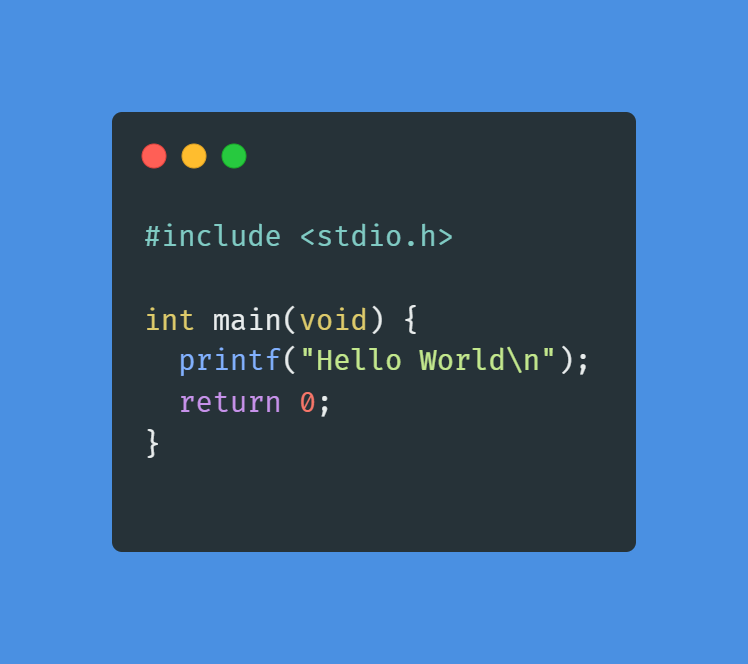

Características Principales
- Lenguaje de propósito general utilizado en sistemas embebidos y sistemas operativos.
- Proporciona acceso directo a memoria a través de punteros.
- Compilado, lo que permite una ejecución más rápida del código.
- Facilita el desarrollo de software de bajo nivel.
- Permite una alta modularidad mediante funciones.
Tipos de datos
- short, int, long: Para diferentes tamaños de números enteros.
- float, double: Para decimales de precisión simple y doble.
- char: Para representar caracteres individuales.
- _Bool: Representa valores booleanos.
Ventajas y desventajas
- Ventajas:
- Ideal para desarrollo de software con uso intensivo de hardware.
- Alta eficiencia en el uso de recursos.
- Gran control sobre el comportamiento del programa.
- Desventajas:
- No incluye características modernas como orientación a objetos.
- Mayor probabilidad de errores como desbordamientos o fallos de memoria.
- Curva de aprendizaje más pronunciada al tratar con punteros y estructuras.
Ejemplo de "Hola Mundo"
